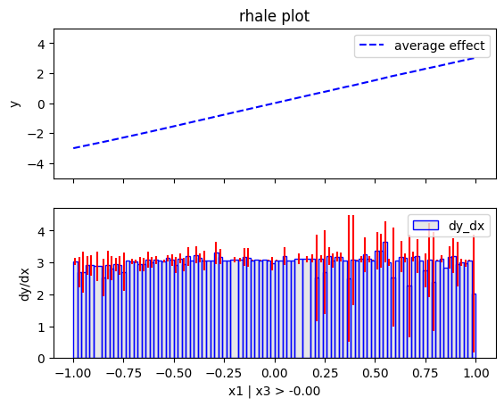

Regional Effects (unknown black-box function)
This tutorial use the same dataset with the previous tutorial, but instead of explaining the known (synthetic) predictive function, we fit a neural network on the data and explain the neural network. This is a more realistic scenario, since in real-world applications we do not know the underlying function and we only have access to the data. We advise the reader to first read the previous tutorial.
import numpy as np
import effector
import keras
import tensorflow as tf
np.random.seed(12345)
tf.random.set_seed(12345)
2025-01-27 15:12:36.310452: I external/local_xla/xla/tsl/cuda/cudart_stub.cc:32] Could not find cuda drivers on your machine, GPU will not be used.
2025-01-27 15:12:36.313175: I external/local_xla/xla/tsl/cuda/cudart_stub.cc:32] Could not find cuda drivers on your machine, GPU will not be used.
2025-01-27 15:12:36.322064: E external/local_xla/xla/stream_executor/cuda/cuda_fft.cc:477] Unable to register cuFFT factory: Attempting to register factory for plugin cuFFT when one has already been registered
WARNING: All log messages before absl::InitializeLog() is called are written to STDERR
E0000 00:00:1737987156.337129 102929 cuda_dnn.cc:8310] Unable to register cuDNN factory: Attempting to register factory for plugin cuDNN when one has already been registered
E0000 00:00:1737987156.341482 102929 cuda_blas.cc:1418] Unable to register cuBLAS factory: Attempting to register factory for plugin cuBLAS when one has already been registered
2025-01-27 15:12:36.357073: I tensorflow/core/platform/cpu_feature_guard.cc:210] This TensorFlow binary is optimized to use available CPU instructions in performance-critical operations.
To enable the following instructions: AVX2 FMA, in other operations, rebuild TensorFlow with the appropriate compiler flags.
Simulation example
Data Generating Distribution
We will generate \(N=500\) examples with \(D=3\) features, which are in the uncorrelated setting all uniformly distributed as follows:
| Feature | Description | Distribution |
|---|---|---|
| \(x_1\) | Uniformly distributed between \(-1\) and \(1\) | \(x_1 \sim \mathcal{U}(-1,1)\) |
| \(x_2\) | Uniformly distributed between \(-1\) and \(1\) | \(x_2 \sim \mathcal{U}(-1,1)\) |
| \(x_3\) | Uniformly distributed between \(-1\) and \(1\) | \(x_3 \sim \mathcal{U}(-1,1)\) |
For the correlated setting we keep the distributional assumptions for \(x_2\) and \(x_3\) but define \(x_1\) such that it is highly correlated with \(x_3\) by: \(x_1 = x_3 + \delta\) with \(\delta \sim \mathcal{N}(0,0.0625)\).
def generate_dataset_uncorrelated(N):
x1 = np.random.uniform(-1, 1, size=N)
x2 = np.random.uniform(-1, 1, size=N)
x3 = np.random.uniform(-1, 1, size=N)
return np.stack((x1, x2, x3), axis=-1)
def generate_dataset_correlated(N):
x3 = np.random.uniform(-1, 1, size=N)
x2 = np.random.uniform(-1, 1, size=N)
x1 = x3 + np.random.normal(loc = np.zeros_like(x3), scale = 0.25)
return np.stack((x1, x2, x3), axis=-1)
# generate the dataset for the uncorrelated and correlated setting
N = 1000
X_uncor_train = generate_dataset_uncorrelated(N)
X_uncor_test = generate_dataset_uncorrelated(10000)
X_cor_train = generate_dataset_correlated(N)
X_cor_test = generate_dataset_correlated(10000)
Black-box function
We will use the following linear model with a subgroup-specific interaction term: $$ y = 3x_1I_{x_3>0} - 3x_1I_{x_3\leq0} + x_3$$
On a global level, there is a high heterogeneity for the features \(x_1\) and \(x_3\) due to their interaction with each other. However, this heterogeneity vanishes to 0 if the feature space is separated into subregions:
| Feature | Region | Average Effect | Heterogeneity |
|---|---|---|---|
| \(x_1\) | \(x_3>0\) | \(3x_1\) | 0 |
| \(x_1\) | \(x_3\leq 0\) | \(-3x_1\) | 0 |
| \(x_2\) | all | 0 | 0 |
| \(x_3\) | \(x_3>0\) | \(x_3\) | 0 |
| \(x_3\) | \(x_3\leq 0\) | \(x_3\) | 0 |
def generate_target(X):
f = np.where(X[:,2] > 0, 3*X[:,0] + X[:,2], -3*X[:,0] + X[:,2])
epsilon = np.random.normal(loc = np.zeros_like(X[:,0]), scale = 0.1)
Y = f + epsilon
return(Y)
# generate target for uncorrelated and correlated setting
Y_uncor_train = generate_target(X_uncor_train)
Y_uncor_test = generate_target(X_uncor_test)
Y_cor_train = generate_target(X_cor_train)
Y_cor_test = generate_target(X_cor_test)
Fit a Neural Network
We create a two-layer feedforward Neural Network, a weight decay of 0.01 for 100 epochs. We train two instances of this NN, one on the uncorrelated and one on the correlated setting. In both cases, the NN achieves a Mean Squared Error of about \(0.17\) units.
# Train - Evaluate - Explain a neural network
model_uncor = keras.Sequential([
keras.layers.Dense(10, activation="relu", input_shape=(3,)),
keras.layers.Dense(10, activation="relu", input_shape=(3,)),
keras.layers.Dense(1)
])
optimizer = keras.optimizers.Adam(learning_rate=0.01)
model_uncor.compile(optimizer=optimizer, loss="mse")
model_uncor.fit(X_uncor_train, Y_uncor_train, epochs=100)
model_uncor.evaluate(X_uncor_test, Y_uncor_test)
Epoch 1/100
/home/givasile/miniconda3/envs/effector-dev/lib/python3.10/site-packages/keras/src/layers/core/dense.py:87: UserWarning: Do not pass an `input_shape`/`input_dim` argument to a layer. When using Sequential models, prefer using an `Input(shape)` object as the first layer in the model instead.
super().__init__(activity_regularizer=activity_regularizer, **kwargs)
2025-01-27 15:12:37.627490: E external/local_xla/xla/stream_executor/cuda/cuda_driver.cc:152] failed call to cuInit: INTERNAL: CUDA error: Failed call to cuInit: CUDA_ERROR_COMPAT_NOT_SUPPORTED_ON_DEVICE: forward compatibility was attempted on non supported HW
2025-01-27 15:12:37.627515: I external/local_xla/xla/stream_executor/cuda/cuda_diagnostics.cc:137] retrieving CUDA diagnostic information for host: givasile-ubuntu-XPS-15-9500
2025-01-27 15:12:37.627520: I external/local_xla/xla/stream_executor/cuda/cuda_diagnostics.cc:144] hostname: givasile-ubuntu-XPS-15-9500
2025-01-27 15:12:37.627686: I external/local_xla/xla/stream_executor/cuda/cuda_diagnostics.cc:168] libcuda reported version is: 560.35.5
2025-01-27 15:12:37.627714: I external/local_xla/xla/stream_executor/cuda/cuda_diagnostics.cc:172] kernel reported version is: 550.120.0
2025-01-27 15:12:37.627721: E external/local_xla/xla/stream_executor/cuda/cuda_diagnostics.cc:262] kernel version 550.120.0 does not match DSO version 560.35.5 -- cannot find working devices in this configuration
[1m32/32[0m [32m━━━━━━━━━━━━━━━━━━━━[0m[37m[0m [1m1s[0m 755us/step - loss: 2.6350
Epoch 2/100
[1m32/32[0m [32m━━━━━━━━━━━━━━━━━━━━[0m[37m[0m [1m0s[0m 646us/step - loss: 0.8495
Epoch 3/100
[1m32/32[0m [32m━━━━━━━━━━━━━━━━━━━━[0m[37m[0m [1m0s[0m 634us/step - loss: 0.4121
Epoch 4/100
[1m32/32[0m [32m━━━━━━━━━━━━━━━━━━━━[0m[37m[0m [1m0s[0m 622us/step - loss: 0.3024
Epoch 5/100
[1m32/32[0m [32m━━━━━━━━━━━━━━━━━━━━[0m[37m[0m [1m0s[0m 624us/step - loss: 0.2426
Epoch 6/100
[1m32/32[0m [32m━━━━━━━━━━━━━━━━━━━━[0m[37m[0m [1m0s[0m 625us/step - loss: 0.2076
Epoch 7/100
[1m32/32[0m [32m━━━━━━━━━━━━━━━━━━━━[0m[37m[0m [1m0s[0m 686us/step - loss: 0.1830
Epoch 8/100
[1m32/32[0m [32m━━━━━━━━━━━━━━━━━━━━[0m[37m[0m [1m0s[0m 639us/step - loss: 0.1631
Epoch 9/100
[1m32/32[0m [32m━━━━━━━━━━━━━━━━━━━━[0m[37m[0m [1m0s[0m 648us/step - loss: 0.1482
Epoch 10/100
[1m32/32[0m [32m━━━━━━━━━━━━━━━━━━━━[0m[37m[0m [1m0s[0m 663us/step - loss: 0.1380
Epoch 11/100
[1m32/32[0m [32m━━━━━━━━━━━━━━━━━━━━[0m[37m[0m [1m0s[0m 623us/step - loss: 0.1300
Epoch 12/100
[1m32/32[0m [32m━━━━━━━━━━━━━━━━━━━━[0m[37m[0m [1m0s[0m 593us/step - loss: 0.1225
Epoch 13/100
[1m32/32[0m [32m━━━━━━━━━━━━━━━━━━━━[0m[37m[0m [1m0s[0m 603us/step - loss: 0.1156
Epoch 14/100
[1m32/32[0m [32m━━━━━━━━━━━━━━━━━━━━[0m[37m[0m [1m0s[0m 675us/step - loss: 0.1099
Epoch 15/100
[1m32/32[0m [32m━━━━━━━━━━━━━━━━━━━━[0m[37m[0m [1m0s[0m 633us/step - loss: 0.1063
Epoch 16/100
[1m32/32[0m [32m━━━━━━━━━━━━━━━━━━━━[0m[37m[0m [1m0s[0m 605us/step - loss: 0.1027
Epoch 17/100
[1m32/32[0m [32m━━━━━━━━━━━━━━━━━━━━[0m[37m[0m [1m0s[0m 620us/step - loss: 0.0992
Epoch 18/100
[1m32/32[0m [32m━━━━━━━━━━━━━━━━━━━━[0m[37m[0m [1m0s[0m 633us/step - loss: 0.0961
Epoch 19/100
[1m32/32[0m [32m━━━━━━━━━━━━━━━━━━━━[0m[37m[0m [1m0s[0m 630us/step - loss: 0.0921
Epoch 20/100
[1m32/32[0m [32m━━━━━━━━━━━━━━━━━━━━[0m[37m[0m [1m0s[0m 604us/step - loss: 0.0896
Epoch 21/100
[1m32/32[0m [32m━━━━━━━━━━━━━━━━━━━━[0m[37m[0m [1m0s[0m 587us/step - loss: 0.0869
Epoch 22/100
[1m32/32[0m [32m━━━━━━━━━━━━━━━━━━━━[0m[37m[0m [1m0s[0m 2ms/step - loss: 0.0836
Epoch 23/100
[1m32/32[0m [32m━━━━━━━━━━━━━━━━━━━━[0m[37m[0m [1m0s[0m 805us/step - loss: 0.0818
Epoch 24/100
[1m32/32[0m [32m━━━━━━━━━━━━━━━━━━━━[0m[37m[0m [1m0s[0m 658us/step - loss: 0.0797
Epoch 25/100
[1m32/32[0m [32m━━━━━━━━━━━━━━━━━━━━[0m[37m[0m [1m0s[0m 712us/step - loss: 0.0770
Epoch 26/100
[1m32/32[0m [32m━━━━━━━━━━━━━━━━━━━━[0m[37m[0m [1m0s[0m 633us/step - loss: 0.0749
Epoch 27/100
[1m32/32[0m [32m━━━━━━━━━━━━━━━━━━━━[0m[37m[0m [1m0s[0m 586us/step - loss: 0.0730
Epoch 28/100
[1m32/32[0m [32m━━━━━━━━━━━━━━━━━━━━[0m[37m[0m [1m0s[0m 611us/step - loss: 0.0707
Epoch 29/100
[1m32/32[0m [32m━━━━━━━━━━━━━━━━━━━━[0m[37m[0m [1m0s[0m 642us/step - loss: 0.0690
Epoch 30/100
[1m32/32[0m [32m━━━━━━━━━━━━━━━━━━━━[0m[37m[0m [1m0s[0m 626us/step - loss: 0.0683
Epoch 31/100
[1m32/32[0m [32m━━━━━━━━━━━━━━━━━━━━[0m[37m[0m [1m0s[0m 620us/step - loss: 0.0672
Epoch 32/100
[1m32/32[0m [32m━━━━━━━━━━━━━━━━━━━━[0m[37m[0m [1m0s[0m 634us/step - loss: 0.0661
Epoch 33/100
[1m32/32[0m [32m━━━━━━━━━━━━━━━━━━━━[0m[37m[0m [1m0s[0m 629us/step - loss: 0.0655
Epoch 34/100
[1m32/32[0m [32m━━━━━━━━━━━━━━━━━━━━[0m[37m[0m [1m0s[0m 648us/step - loss: 0.0638
Epoch 35/100
[1m32/32[0m [32m━━━━━━━━━━━━━━━━━━━━[0m[37m[0m [1m0s[0m 668us/step - loss: 0.0627
Epoch 36/100
[1m32/32[0m [32m━━━━━━━━━━━━━━━━━━━━[0m[37m[0m [1m0s[0m 594us/step - loss: 0.0622
Epoch 37/100
[1m32/32[0m [32m━━━━━━━━━━━━━━━━━━━━[0m[37m[0m [1m0s[0m 624us/step - loss: 0.0610
Epoch 38/100
[1m32/32[0m [32m━━━━━━━━━━━━━━━━━━━━[0m[37m[0m [1m0s[0m 599us/step - loss: 0.0599
Epoch 39/100
[1m32/32[0m [32m━━━━━━━━━━━━━━━━━━━━[0m[37m[0m [1m0s[0m 610us/step - loss: 0.0595
Epoch 40/100
[1m32/32[0m [32m━━━━━━━━━━━━━━━━━━━━[0m[37m[0m [1m0s[0m 649us/step - loss: 0.0591
Epoch 41/100
[1m32/32[0m [32m━━━━━━━━━━━━━━━━━━━━[0m[37m[0m [1m0s[0m 685us/step - loss: 0.0568
Epoch 42/100
[1m32/32[0m [32m━━━━━━━━━━━━━━━━━━━━[0m[37m[0m [1m0s[0m 588us/step - loss: 0.0574
Epoch 43/100
[1m32/32[0m [32m━━━━━━━━━━━━━━━━━━━━[0m[37m[0m [1m0s[0m 625us/step - loss: 0.0566
Epoch 44/100
[1m32/32[0m [32m━━━━━━━━━━━━━━━━━━━━[0m[37m[0m [1m0s[0m 666us/step - loss: 0.0571
Epoch 45/100
[1m32/32[0m [32m━━━━━━━━━━━━━━━━━━━━[0m[37m[0m [1m0s[0m 600us/step - loss: 0.0562
Epoch 46/100
[1m32/32[0m [32m━━━━━━━━━━━━━━━━━━━━[0m[37m[0m [1m0s[0m 638us/step - loss: 0.0557
Epoch 47/100
[1m32/32[0m [32m━━━━━━━━━━━━━━━━━━━━[0m[37m[0m [1m0s[0m 610us/step - loss: 0.0557
Epoch 48/100
[1m32/32[0m [32m━━━━━━━━━━━━━━━━━━━━[0m[37m[0m [1m0s[0m 718us/step - loss: 0.0558
Epoch 49/100
[1m32/32[0m [32m━━━━━━━━━━━━━━━━━━━━[0m[37m[0m [1m0s[0m 730us/step - loss: 0.0549
Epoch 50/100
[1m32/32[0m [32m━━━━━━━━━━━━━━━━━━━━[0m[37m[0m [1m0s[0m 639us/step - loss: 0.0550
Epoch 51/100
[1m32/32[0m [32m━━━━━━━━━━━━━━━━━━━━[0m[37m[0m [1m0s[0m 679us/step - loss: 0.0544
Epoch 52/100
[1m32/32[0m [32m━━━━━━━━━━━━━━━━━━━━[0m[37m[0m [1m0s[0m 613us/step - loss: 0.0557
Epoch 53/100
[1m32/32[0m [32m━━━━━━━━━━━━━━━━━━━━[0m[37m[0m [1m0s[0m 622us/step - loss: 0.0546
Epoch 54/100
[1m32/32[0m [32m━━━━━━━━━━━━━━━━━━━━[0m[37m[0m [1m0s[0m 607us/step - loss: 0.0536
Epoch 55/100
[1m32/32[0m [32m━━━━━━━━━━━━━━━━━━━━[0m[37m[0m [1m0s[0m 619us/step - loss: 0.0546
Epoch 56/100
[1m32/32[0m [32m━━━━━━━━━━━━━━━━━━━━[0m[37m[0m [1m0s[0m 626us/step - loss: 0.0533
Epoch 57/100
[1m32/32[0m [32m━━━━━━━━━━━━━━━━━━━━[0m[37m[0m [1m0s[0m 588us/step - loss: 0.0544
Epoch 58/100
[1m32/32[0m [32m━━━━━━━━━━━━━━━━━━━━[0m[37m[0m [1m0s[0m 573us/step - loss: 0.0537
Epoch 59/100
[1m32/32[0m [32m━━━━━━━━━━━━━━━━━━━━[0m[37m[0m [1m0s[0m 601us/step - loss: 0.0537
Epoch 60/100
[1m32/32[0m [32m━━━━━━━━━━━━━━━━━━━━[0m[37m[0m [1m0s[0m 619us/step - loss: 0.0529
Epoch 61/100
[1m32/32[0m [32m━━━━━━━━━━━━━━━━━━━━[0m[37m[0m [1m0s[0m 596us/step - loss: 0.0540
Epoch 62/100
[1m32/32[0m [32m━━━━━━━━━━━━━━━━━━━━[0m[37m[0m [1m0s[0m 604us/step - loss: 0.0550
Epoch 63/100
[1m32/32[0m [32m━━━━━━━━━━━━━━━━━━━━[0m[37m[0m [1m0s[0m 576us/step - loss: 0.0535
Epoch 64/100
[1m32/32[0m [32m━━━━━━━━━━━━━━━━━━━━[0m[37m[0m [1m0s[0m 617us/step - loss: 0.0544
Epoch 65/100
[1m32/32[0m [32m━━━━━━━━━━━━━━━━━━━━[0m[37m[0m [1m0s[0m 609us/step - loss: 0.0524
Epoch 66/100
[1m32/32[0m [32m━━━━━━━━━━━━━━━━━━━━[0m[37m[0m [1m0s[0m 569us/step - loss: 0.0524
Epoch 67/100
[1m32/32[0m [32m━━━━━━━━━━━━━━━━━━━━[0m[37m[0m [1m0s[0m 590us/step - loss: 0.0515
Epoch 68/100
[1m32/32[0m [32m━━━━━━━━━━━━━━━━━━━━[0m[37m[0m [1m0s[0m 626us/step - loss: 0.0531
Epoch 69/100
[1m32/32[0m [32m━━━━━━━━━━━━━━━━━━━━[0m[37m[0m [1m0s[0m 1ms/step - loss: 0.0530
Epoch 70/100
[1m32/32[0m [32m━━━━━━━━━━━━━━━━━━━━[0m[37m[0m [1m0s[0m 806us/step - loss: 0.0510
Epoch 71/100
[1m32/32[0m [32m━━━━━━━━━━━━━━━━━━━━[0m[37m[0m [1m0s[0m 603us/step - loss: 0.0501
Epoch 72/100
[1m32/32[0m [32m━━━━━━━━━━━━━━━━━━━━[0m[37m[0m [1m0s[0m 598us/step - loss: 0.0514
Epoch 73/100
[1m32/32[0m [32m━━━━━━━━━━━━━━━━━━━━[0m[37m[0m [1m0s[0m 607us/step - loss: 0.0511
Epoch 74/100
[1m32/32[0m [32m━━━━━━━━━━━━━━━━━━━━[0m[37m[0m [1m0s[0m 627us/step - loss: 0.0508
Epoch 75/100
[1m32/32[0m [32m━━━━━━━━━━━━━━━━━━━━[0m[37m[0m [1m0s[0m 572us/step - loss: 0.0495
Epoch 76/100
[1m32/32[0m [32m━━━━━━━━━━━━━━━━━━━━[0m[37m[0m [1m0s[0m 617us/step - loss: 0.0495
Epoch 77/100
[1m32/32[0m [32m━━━━━━━━━━━━━━━━━━━━[0m[37m[0m [1m0s[0m 635us/step - loss: 0.0487
Epoch 78/100
[1m32/32[0m [32m━━━━━━━━━━━━━━━━━━━━[0m[37m[0m [1m0s[0m 647us/step - loss: 0.0490
Epoch 79/100
[1m32/32[0m [32m━━━━━━━━━━━━━━━━━━━━[0m[37m[0m [1m0s[0m 622us/step - loss: 0.0495
Epoch 80/100
[1m32/32[0m [32m━━━━━━━━━━━━━━━━━━━━[0m[37m[0m [1m0s[0m 606us/step - loss: 0.0492
Epoch 81/100
[1m32/32[0m [32m━━━━━━━━━━━━━━━━━━━━[0m[37m[0m [1m0s[0m 592us/step - loss: 0.0483
Epoch 82/100
[1m32/32[0m [32m━━━━━━━━━━━━━━━━━━━━[0m[37m[0m [1m0s[0m 631us/step - loss: 0.0475
Epoch 83/100
[1m32/32[0m [32m━━━━━━━━━━━━━━━━━━━━[0m[37m[0m [1m0s[0m 636us/step - loss: 0.0487
Epoch 84/100
[1m32/32[0m [32m━━━━━━━━━━━━━━━━━━━━[0m[37m[0m [1m0s[0m 585us/step - loss: 0.0497
Epoch 85/100
[1m32/32[0m [32m━━━━━━━━━━━━━━━━━━━━[0m[37m[0m [1m0s[0m 588us/step - loss: 0.0505
Epoch 86/100
[1m32/32[0m [32m━━━━━━━━━━━━━━━━━━━━[0m[37m[0m [1m0s[0m 644us/step - loss: 0.0471
Epoch 87/100
[1m32/32[0m [32m━━━━━━━━━━━━━━━━━━━━[0m[37m[0m [1m0s[0m 622us/step - loss: 0.0477
Epoch 88/100
[1m32/32[0m [32m━━━━━━━━━━━━━━━━━━━━[0m[37m[0m [1m0s[0m 595us/step - loss: 0.0478
Epoch 89/100
[1m32/32[0m [32m━━━━━━━━━━━━━━━━━━━━[0m[37m[0m [1m0s[0m 668us/step - loss: 0.0465
Epoch 90/100
[1m32/32[0m [32m━━━━━━━━━━━━━━━━━━━━[0m[37m[0m [1m0s[0m 606us/step - loss: 0.0480
Epoch 91/100
[1m32/32[0m [32m━━━━━━━━━━━━━━━━━━━━[0m[37m[0m [1m0s[0m 587us/step - loss: 0.0510
Epoch 92/100
[1m32/32[0m [32m━━━━━━━━━━━━━━━━━━━━[0m[37m[0m [1m0s[0m 603us/step - loss: 0.0465
Epoch 93/100
[1m32/32[0m [32m━━━━━━━━━━━━━━━━━━━━[0m[37m[0m [1m0s[0m 595us/step - loss: 0.0464
Epoch 94/100
[1m32/32[0m [32m━━━━━━━━━━━━━━━━━━━━[0m[37m[0m [1m0s[0m 621us/step - loss: 0.0465
Epoch 95/100
[1m32/32[0m [32m━━━━━━━━━━━━━━━━━━━━[0m[37m[0m [1m0s[0m 621us/step - loss: 0.0464
Epoch 96/100
[1m32/32[0m [32m━━━━━━━━━━━━━━━━━━━━[0m[37m[0m [1m0s[0m 1ms/step - loss: 0.0482
Epoch 97/100
[1m32/32[0m [32m━━━━━━━━━━━━━━━━━━━━[0m[37m[0m [1m0s[0m 813us/step - loss: 0.0523
Epoch 98/100
[1m32/32[0m [32m━━━━━━━━━━━━━━━━━━━━[0m[37m[0m [1m0s[0m 650us/step - loss: 0.0455
Epoch 99/100
[1m32/32[0m [32m━━━━━━━━━━━━━━━━━━━━[0m[37m[0m [1m0s[0m 628us/step - loss: 0.0453
Epoch 100/100
[1m32/32[0m [32m━━━━━━━━━━━━━━━━━━━━[0m[37m[0m [1m0s[0m 642us/step - loss: 0.0465
[1m313/313[0m [32m━━━━━━━━━━━━━━━━━━━━[0m[37m[0m [1m0s[0m 471us/step - loss: 0.0786
0.07576844841241837
model_cor = keras.Sequential([
keras.layers.Dense(10, activation="relu", input_shape=(3,)),
keras.layers.Dense(10, activation="relu", input_shape=(3,)),
keras.layers.Dense(1)
])
optimizer = keras.optimizers.Adam(learning_rate=0.01)
model_cor.compile(optimizer=optimizer, loss="mse")
model_cor.fit(X_cor_train, Y_cor_train, epochs=100)
model_cor.evaluate(X_cor_test, Y_cor_test)
Epoch 1/100
[1m32/32[0m [32m━━━━━━━━━━━━━━━━━━━━[0m[37m[0m [1m1s[0m 624us/step - loss: 2.3108
Epoch 2/100
[1m32/32[0m [32m━━━━━━━━━━━━━━━━━━━━[0m[37m[0m [1m0s[0m 633us/step - loss: 0.4373
Epoch 3/100
[1m32/32[0m [32m━━━━━━━━━━━━━━━━━━━━[0m[37m[0m [1m0s[0m 620us/step - loss: 0.1331
Epoch 4/100
[1m32/32[0m [32m━━━━━━━━━━━━━━━━━━━━[0m[37m[0m [1m0s[0m 615us/step - loss: 0.1131
Epoch 5/100
[1m32/32[0m [32m━━━━━━━━━━━━━━━━━━━━[0m[37m[0m [1m0s[0m 589us/step - loss: 0.1109
Epoch 6/100
[1m32/32[0m [32m━━━━━━━━━━━━━━━━━━━━[0m[37m[0m [1m0s[0m 593us/step - loss: 0.1074
Epoch 7/100
[1m32/32[0m [32m━━━━━━━━━━━━━━━━━━━━[0m[37m[0m [1m0s[0m 634us/step - loss: 0.1039
Epoch 8/100
[1m32/32[0m [32m━━━━━━━━━━━━━━━━━━━━[0m[37m[0m [1m0s[0m 573us/step - loss: 0.0991
Epoch 9/100
[1m32/32[0m [32m━━━━━━━━━━━━━━━━━━━━[0m[37m[0m [1m0s[0m 606us/step - loss: 0.0911
Epoch 10/100
[1m32/32[0m [32m━━━━━━━━━━━━━━━━━━━━[0m[37m[0m [1m0s[0m 601us/step - loss: 0.0838
Epoch 11/100
[1m32/32[0m [32m━━━━━━━━━━━━━━━━━━━━[0m[37m[0m [1m0s[0m 595us/step - loss: 0.0780
Epoch 12/100
[1m32/32[0m [32m━━━━━━━━━━━━━━━━━━━━[0m[37m[0m [1m0s[0m 619us/step - loss: 0.0719
Epoch 13/100
[1m32/32[0m [32m━━━━━━━━━━━━━━━━━━━━[0m[37m[0m [1m0s[0m 606us/step - loss: 0.0675
Epoch 14/100
[1m32/32[0m [32m━━━━━━━━━━━━━━━━━━━━[0m[37m[0m [1m0s[0m 597us/step - loss: 0.0643
Epoch 15/100
[1m32/32[0m [32m━━━━━━━━━━━━━━━━━━━━[0m[37m[0m [1m0s[0m 564us/step - loss: 0.0586
Epoch 16/100
[1m32/32[0m [32m━━━━━━━━━━━━━━━━━━━━[0m[37m[0m [1m0s[0m 601us/step - loss: 0.0552
Epoch 17/100
[1m32/32[0m [32m━━━━━━━━━━━━━━━━━━━━[0m[37m[0m [1m0s[0m 604us/step - loss: 0.0517
Epoch 18/100
[1m32/32[0m [32m━━━━━━━━━━━━━━━━━━━━[0m[37m[0m [1m0s[0m 614us/step - loss: 0.0477
Epoch 19/100
[1m32/32[0m [32m━━━━━━━━━━━━━━━━━━━━[0m[37m[0m [1m0s[0m 615us/step - loss: 0.0436
Epoch 20/100
[1m32/32[0m [32m━━━━━━━━━━━━━━━━━━━━[0m[37m[0m [1m0s[0m 588us/step - loss: 0.0408
Epoch 21/100
[1m32/32[0m [32m━━━━━━━━━━━━━━━━━━━━[0m[37m[0m [1m0s[0m 628us/step - loss: 0.0381
Epoch 22/100
[1m32/32[0m [32m━━━━━━━━━━━━━━━━━━━━[0m[37m[0m [1m0s[0m 600us/step - loss: 0.0358
Epoch 23/100
[1m32/32[0m [32m━━━━━━━━━━━━━━━━━━━━[0m[37m[0m [1m0s[0m 603us/step - loss: 0.0338
Epoch 24/100
[1m32/32[0m [32m━━━━━━━━━━━━━━━━━━━━[0m[37m[0m [1m0s[0m 628us/step - loss: 0.0320
Epoch 25/100
[1m32/32[0m [32m━━━━━━━━━━━━━━━━━━━━[0m[37m[0m [1m0s[0m 575us/step - loss: 0.0306
Epoch 26/100
[1m32/32[0m [32m━━━━━━━━━━━━━━━━━━━━[0m[37m[0m [1m0s[0m 613us/step - loss: 0.0293
Epoch 27/100
[1m32/32[0m [32m━━━━━━━━━━━━━━━━━━━━[0m[37m[0m [1m0s[0m 610us/step - loss: 0.0286
Epoch 28/100
[1m32/32[0m [32m━━━━━━━━━━━━━━━━━━━━[0m[37m[0m [1m0s[0m 635us/step - loss: 0.0275
Epoch 29/100
[1m32/32[0m [32m━━━━━━━━━━━━━━━━━━━━[0m[37m[0m [1m0s[0m 571us/step - loss: 0.0266
Epoch 30/100
[1m32/32[0m [32m━━━━━━━━━━━━━━━━━━━━[0m[37m[0m [1m0s[0m 688us/step - loss: 0.0260
Epoch 31/100
[1m32/32[0m [32m━━━━━━━━━━━━━━━━━━━━[0m[37m[0m [1m0s[0m 624us/step - loss: 0.0252
Epoch 32/100
[1m32/32[0m [32m━━━━━━━━━━━━━━━━━━━━[0m[37m[0m [1m0s[0m 636us/step - loss: 0.0246
Epoch 33/100
[1m32/32[0m [32m━━━━━━━━━━━━━━━━━━━━[0m[37m[0m [1m0s[0m 578us/step - loss: 0.0239
Epoch 34/100
[1m32/32[0m [32m━━━━━━━━━━━━━━━━━━━━[0m[37m[0m [1m0s[0m 588us/step - loss: 0.0230
Epoch 35/100
[1m32/32[0m [32m━━━━━━━━━━━━━━━━━━━━[0m[37m[0m [1m0s[0m 623us/step - loss: 0.0224
Epoch 36/100
[1m32/32[0m [32m━━━━━━━━━━━━━━━━━━━━[0m[37m[0m [1m0s[0m 602us/step - loss: 0.0219
Epoch 37/100
[1m32/32[0m [32m━━━━━━━━━━━━━━━━━━━━[0m[37m[0m [1m0s[0m 600us/step - loss: 0.0215
Epoch 38/100
[1m32/32[0m [32m━━━━━━━━━━━━━━━━━━━━[0m[37m[0m [1m0s[0m 571us/step - loss: 0.0215
Epoch 39/100
[1m32/32[0m [32m━━━━━━━━━━━━━━━━━━━━[0m[37m[0m [1m0s[0m 601us/step - loss: 0.0210
Epoch 40/100
[1m32/32[0m [32m━━━━━━━━━━━━━━━━━━━━[0m[37m[0m [1m0s[0m 686us/step - loss: 0.0206
Epoch 41/100
[1m32/32[0m [32m━━━━━━━━━━━━━━━━━━━━[0m[37m[0m [1m0s[0m 628us/step - loss: 0.0205
Epoch 42/100
[1m32/32[0m [32m━━━━━━━━━━━━━━━━━━━━[0m[37m[0m [1m0s[0m 586us/step - loss: 0.0204
Epoch 43/100
[1m32/32[0m [32m━━━━━━━━━━━━━━━━━━━━[0m[37m[0m [1m0s[0m 599us/step - loss: 0.0203
Epoch 44/100
[1m32/32[0m [32m━━━━━━━━━━━━━━━━━━━━[0m[37m[0m [1m0s[0m 623us/step - loss: 0.0205
Epoch 45/100
[1m32/32[0m [32m━━━━━━━━━━━━━━━━━━━━[0m[37m[0m [1m0s[0m 588us/step - loss: 0.0201
Epoch 46/100
[1m32/32[0m [32m━━━━━━━━━━━━━━━━━━━━[0m[37m[0m [1m0s[0m 695us/step - loss: 0.0202
Epoch 47/100
[1m32/32[0m [32m━━━━━━━━━━━━━━━━━━━━[0m[37m[0m [1m0s[0m 741us/step - loss: 0.0198
Epoch 48/100
[1m32/32[0m [32m━━━━━━━━━━━━━━━━━━━━[0m[37m[0m [1m0s[0m 682us/step - loss: 0.0198
Epoch 49/100
[1m32/32[0m [32m━━━━━━━━━━━━━━━━━━━━[0m[37m[0m [1m0s[0m 1ms/step - loss: 0.0198
Epoch 50/100
[1m32/32[0m [32m━━━━━━━━━━━━━━━━━━━━[0m[37m[0m [1m0s[0m 782us/step - loss: 0.0201
Epoch 51/100
[1m32/32[0m [32m━━━━━━━━━━━━━━━━━━━━[0m[37m[0m [1m0s[0m 619us/step - loss: 0.0193
Epoch 52/100
[1m32/32[0m [32m━━━━━━━━━━━━━━━━━━━━[0m[37m[0m [1m0s[0m 621us/step - loss: 0.0197
Epoch 53/100
[1m32/32[0m [32m━━━━━━━━━━━━━━━━━━━━[0m[37m[0m [1m0s[0m 691us/step - loss: 0.0190
Epoch 54/100
[1m32/32[0m [32m━━━━━━━━━━━━━━━━━━━━[0m[37m[0m [1m0s[0m 802us/step - loss: 0.0190
Epoch 55/100
[1m32/32[0m [32m━━━━━━━━━━━━━━━━━━━━[0m[37m[0m [1m0s[0m 785us/step - loss: 0.0193
Epoch 56/100
[1m32/32[0m [32m━━━━━━━━━━━━━━━━━━━━[0m[37m[0m [1m0s[0m 710us/step - loss: 0.0196
Epoch 57/100
[1m32/32[0m [32m━━━━━━━━━━━━━━━━━━━━[0m[37m[0m [1m0s[0m 782us/step - loss: 0.0190
Epoch 58/100
[1m32/32[0m [32m━━━━━━━━━━━━━━━━━━━━[0m[37m[0m [1m0s[0m 844us/step - loss: 0.0191
Epoch 59/100
[1m32/32[0m [32m━━━━━━━━━━━━━━━━━━━━[0m[37m[0m [1m0s[0m 686us/step - loss: 0.0188
Epoch 60/100
[1m32/32[0m [32m━━━━━━━━━━━━━━━━━━━━[0m[37m[0m [1m0s[0m 695us/step - loss: 0.0190
Epoch 61/100
[1m32/32[0m [32m━━━━━━━━━━━━━━━━━━━━[0m[37m[0m [1m0s[0m 672us/step - loss: 0.0187
Epoch 62/100
[1m32/32[0m [32m━━━━━━━━━━━━━━━━━━━━[0m[37m[0m [1m0s[0m 630us/step - loss: 0.0190
Epoch 63/100
[1m32/32[0m [32m━━━━━━━━━━━━━━━━━━━━[0m[37m[0m [1m0s[0m 606us/step - loss: 0.0186
Epoch 64/100
[1m32/32[0m [32m━━━━━━━━━━━━━━━━━━━━[0m[37m[0m [1m0s[0m 610us/step - loss: 0.0188
Epoch 65/100
[1m32/32[0m [32m━━━━━━━━━━━━━━━━━━━━[0m[37m[0m [1m0s[0m 723us/step - loss: 0.0186
Epoch 66/100
[1m32/32[0m [32m━━━━━━━━━━━━━━━━━━━━[0m[37m[0m [1m0s[0m 668us/step - loss: 0.0192
Epoch 67/100
[1m32/32[0m [32m━━━━━━━━━━━━━━━━━━━━[0m[37m[0m [1m0s[0m 776us/step - loss: 0.0185
Epoch 68/100
[1m32/32[0m [32m━━━━━━━━━━━━━━━━━━━━[0m[37m[0m [1m0s[0m 627us/step - loss: 0.0188
Epoch 69/100
[1m32/32[0m [32m━━━━━━━━━━━━━━━━━━━━[0m[37m[0m [1m0s[0m 588us/step - loss: 0.0186
Epoch 70/100
[1m32/32[0m [32m━━━━━━━━━━━━━━━━━━━━[0m[37m[0m [1m0s[0m 618us/step - loss: 0.0190
Epoch 71/100
[1m32/32[0m [32m━━━━━━━━━━━━━━━━━━━━[0m[37m[0m [1m0s[0m 713us/step - loss: 0.0187
Epoch 72/100
[1m32/32[0m [32m━━━━━━━━━━━━━━━━━━━━[0m[37m[0m [1m0s[0m 773us/step - loss: 0.0194
Epoch 73/100
[1m32/32[0m [32m━━━━━━━━━━━━━━━━━━━━[0m[37m[0m [1m0s[0m 723us/step - loss: 0.0183
Epoch 74/100
[1m32/32[0m [32m━━━━━━━━━━━━━━━━━━━━[0m[37m[0m [1m0s[0m 673us/step - loss: 0.0193
Epoch 75/100
[1m32/32[0m [32m━━━━━━━━━━━━━━━━━━━━[0m[37m[0m [1m0s[0m 629us/step - loss: 0.0185
Epoch 76/100
[1m32/32[0m [32m━━━━━━━━━━━━━━━━━━━━[0m[37m[0m [1m0s[0m 673us/step - loss: 0.0193
Epoch 77/100
[1m32/32[0m [32m━━━━━━━━━━━━━━━━━━━━[0m[37m[0m [1m0s[0m 711us/step - loss: 0.0183
Epoch 78/100
[1m32/32[0m [32m━━━━━━━━━━━━━━━━━━━━[0m[37m[0m [1m0s[0m 649us/step - loss: 0.0194
Epoch 79/100
[1m32/32[0m [32m━━━━━━━━━━━━━━━━━━━━[0m[37m[0m [1m0s[0m 654us/step - loss: 0.0176
Epoch 80/100
[1m32/32[0m [32m━━━━━━━━━━━━━━━━━━━━[0m[37m[0m [1m0s[0m 616us/step - loss: 0.0176
Epoch 81/100
[1m32/32[0m [32m━━━━━━━━━━━━━━━━━━━━[0m[37m[0m [1m0s[0m 641us/step - loss: 0.0178
Epoch 82/100
[1m32/32[0m [32m━━━━━━━━━━━━━━━━━━━━[0m[37m[0m [1m0s[0m 609us/step - loss: 0.0179
Epoch 83/100
[1m32/32[0m [32m━━━━━━━━━━━━━━━━━━━━[0m[37m[0m [1m0s[0m 635us/step - loss: 0.0185
Epoch 84/100
[1m32/32[0m [32m━━━━━━━━━━━━━━━━━━━━[0m[37m[0m [1m0s[0m 607us/step - loss: 0.0176
Epoch 85/100
[1m32/32[0m [32m━━━━━━━━━━━━━━━━━━━━[0m[37m[0m [1m0s[0m 588us/step - loss: 0.0187
Epoch 86/100
[1m32/32[0m [32m━━━━━━━━━━━━━━━━━━━━[0m[37m[0m [1m0s[0m 627us/step - loss: 0.0176
Epoch 87/100
[1m32/32[0m [32m━━━━━━━━━━━━━━━━━━━━[0m[37m[0m [1m0s[0m 611us/step - loss: 0.0186
Epoch 88/100
[1m32/32[0m [32m━━━━━━━━━━━━━━━━━━━━[0m[37m[0m [1m0s[0m 601us/step - loss: 0.0174
Epoch 89/100
[1m32/32[0m [32m━━━━━━━━━━━━━━━━━━━━[0m[37m[0m [1m0s[0m 655us/step - loss: 0.0186
Epoch 90/100
[1m32/32[0m [32m━━━━━━━━━━━━━━━━━━━━[0m[37m[0m [1m0s[0m 600us/step - loss: 0.0173
Epoch 91/100
[1m32/32[0m [32m━━━━━━━━━━━━━━━━━━━━[0m[37m[0m [1m0s[0m 635us/step - loss: 0.0185
Epoch 92/100
[1m32/32[0m [32m━━━━━━━━━━━━━━━━━━━━[0m[37m[0m [1m0s[0m 608us/step - loss: 0.0171
Epoch 93/100
[1m32/32[0m [32m━━━━━━━━━━━━━━━━━━━━[0m[37m[0m [1m0s[0m 627us/step - loss: 0.0186
Epoch 94/100
[1m32/32[0m [32m━━━━━━━━━━━━━━━━━━━━[0m[37m[0m [1m0s[0m 723us/step - loss: 0.0172
Epoch 95/100
[1m32/32[0m [32m━━━━━━━━━━━━━━━━━━━━[0m[37m[0m [1m0s[0m 638us/step - loss: 0.0185
Epoch 96/100
[1m32/32[0m [32m━━━━━━━━━━━━━━━━━━━━[0m[37m[0m [1m0s[0m 625us/step - loss: 0.0171
Epoch 97/100
[1m32/32[0m [32m━━━━━━━━━━━━━━━━━━━━[0m[37m[0m [1m0s[0m 585us/step - loss: 0.0185
Epoch 98/100
[1m32/32[0m [32m━━━━━━━━━━━━━━━━━━━━[0m[37m[0m [1m0s[0m 622us/step - loss: 0.0171
Epoch 99/100
[1m32/32[0m [32m━━━━━━━━━━━━━━━━━━━━[0m[37m[0m [1m0s[0m 607us/step - loss: 0.0186
Epoch 100/100
[1m32/32[0m [32m━━━━━━━━━━━━━━━━━━━━[0m[37m[0m [1m0s[0m 606us/step - loss: 0.0174
[1m313/313[0m [32m━━━━━━━━━━━━━━━━━━━━[0m[37m[0m [1m0s[0m 476us/step - loss: 0.0290
0.026531754061579704
PDP
Uncorrelated setting
Global PDP
pdp = effector.PDP(data=X_uncor_train, model=model_uncor, feature_names=['x1','x2','x3'], target_name="Y")
pdp.plot(feature=0, centering=True, show_avg_output=False, heterogeneity="ice", y_limits=[-5, 5])
pdp.plot(feature=1, centering=True, show_avg_output=False, heterogeneity="ice", y_limits=[-5, 5])
pdp.plot(feature=2, centering=True, show_avg_output=False, heterogeneity="ice", y_limits=[-5, 5])


Regional PDP
regional_pdp = effector.RegionalPDP(data=X_uncor_train, model=model_uncor, feature_names=['x1','x2','x3'], axis_limits=np.array([[-1,1],[-1,1],[-1,1]]).T)
regional_pdp.fit(features="all", heter_pcg_drop_thres=0.3, nof_candidate_splits_for_numerical=11)
100%|████████████████████████████████████████████████████████████████████████████████████████████████████████████████████████████████████████████████████████████████████████████████████████████████████████████████████████████████████████████████| 3/3 [00:00<00:00, 21.39it/s]
regional_pdp.summary(features=0)
Feature 0 - Full partition tree:
Node id: 0, name: x1, heter: 3.62 || nof_instances: 1000 || weight: 1.00
Node id: 1, name: x1 | x3 <= -0.0, heter: 0.11 || nof_instances: 498 || weight: 0.50
Node id: 2, name: x1 | x3 > -0.0, heter: 0.17 || nof_instances: 502 || weight: 0.50
--------------------------------------------------
Feature 0 - Statistics per tree level:
Level 0, heter: 3.62
Level 1, heter: 0.14 || heter drop : 3.48 (units), 96.13% (pcg)
regional_pdp.plot(feature=0, node_idx=1, heterogeneity="ice", y_limits=[-5, 5])
regional_pdp.plot(feature=0, node_idx=2, heterogeneity="ice", y_limits=[-5, 5])


regional_pdp.summary(features=1)
Feature 1 - Full partition tree:
Node id: 0, name: x2, heter: 3.36 || nof_instances: 1000 || weight: 1.00
--------------------------------------------------
Feature 1 - Statistics per tree level:
Level 0, heter: 3.36
regional_pdp.summary(features=2)
Feature 2 - Full partition tree:
Node id: 0, name: x3, heter: 3.00 || nof_instances: 1000 || weight: 1.00
Node id: 1, name: x3 | x1 <= -0.0, heter: 0.73 || nof_instances: 494 || weight: 0.49
Node id: 2, name: x3 | x1 > -0.0, heter: 0.73 || nof_instances: 506 || weight: 0.51
--------------------------------------------------
Feature 2 - Statistics per tree level:
Level 0, heter: 3.00
Level 1, heter: 0.73 || heter drop : 2.27 (units), 75.67% (pcg)
regional_pdp.plot(feature=2, node_idx=1, heterogeneity="ice", centering=True, y_limits=[-5, 5])
regional_pdp.plot(feature=2, node_idx=2, heterogeneity="ice", centering=True, y_limits=[-5, 5])


Conclusion
For the Global PDP:
- the average effect of \(x_1\) is \(0\) with some heterogeneity implied by the interaction with \(x_1\). The heterogeneity is expressed with two opposite lines; \(-3x_1\) when \(x_1 \leq 0\) and \(3x_1\) when \(x_1 >0\)
- the average effect of \(x_2\) to be \(0\) without heterogeneity
- the average effect of \(x_3\) to be \(x_3\) with some heterogeneity due to the interaction with \(x_1\). The heterogeneity is expressed with a discontinuity around \(x_3=0\), with either a positive or a negative offset depending on the value of \(x_1^i\)
For the Regional PDP:
- For \(x_1\), the algorithm finds two regions, one for \(x_3 \leq 0\) and one for \(x_3 > 0\)
- when \(x_3>0\) the effect is \(3x_1\)
- when \(x_3 \leq 0\), the effect is \(-3x_1\)
- For \(x_2\) the algorithm does not find any subregion
- For \(x_3\), there is a change in the offset:
- when \(x_1>0\) the line is \(x_3 - 3x_1^i\) in the first half and \(x_3 + 3x_1^i\) later
- when \(x_1<0\) the line is \(x_3 + 3x_1^i\) in the first half and \(x_3 - 3x_1^i\) later
Correlated setting
Global PDP
pdp = effector.PDP(data=X_cor_train, model=model_cor, feature_names=['x1','x2','x3'], target_name="Y")
pdp.plot(feature=0, centering=True, show_avg_output=False, heterogeneity="ice", y_limits=[-5, 5])
pdp.plot(feature=1, centering=True, show_avg_output=False, heterogeneity="ice", y_limits=[-5, 5])
pdp.plot(feature=2, centering=True, show_avg_output=False, heterogeneity="ice", y_limits=[-5, 5])


Regional-PDP
regional_pdp = effector.RegionalPDP(data=X_cor_train, model=model_cor, feature_names=['x1','x2','x3'], axis_limits=np.array([[-1,1],[-1,1],[-1,1]]).T)
regional_pdp.fit(features="all", heter_pcg_drop_thres=0.4, nof_candidate_splits_for_numerical=11)
100%|████████████████████████████████████████████████████████████████████████████████████████████████████████████████████████████████████████████████████████████████████████████████████████████████████████████████████████████████████████████████| 3/3 [00:00<00:00, 27.46it/s]
regional_pdp.summary(features=0)
Feature 0 - Full partition tree:
Node id: 0, name: x1, heter: 2.92 || nof_instances: 900 || weight: 1.00
Node id: 1, name: x1 | x3 <= -0.0, heter: 0.23 || nof_instances: 435 || weight: 0.48
Node id: 2, name: x1 | x3 > -0.0, heter: 0.19 || nof_instances: 465 || weight: 0.52
--------------------------------------------------
Feature 0 - Statistics per tree level:
Level 0, heter: 2.92
Level 1, heter: 0.21 || heter drop : 2.71 (units), 92.73% (pcg)
regional_pdp.plot(feature=0, node_idx=1, heterogeneity="ice", centering=True, y_limits=[-5, 5])
regional_pdp.plot(feature=0, node_idx=2, heterogeneity="ice", centering=True, y_limits=[-5, 5])


regional_pdp.summary(features=1)
Feature 1 - Full partition tree:
Node id: 0, name: x2, heter: 1.21 || nof_instances: 900 || weight: 1.00
Node id: 1, name: x2 | x1 <= 0.54, heter: 0.61 || nof_instances: 714 || weight: 0.79
Node id: 2, name: x2 | x1 > 0.54, heter: 0.37 || nof_instances: 186 || weight: 0.21
--------------------------------------------------
Feature 1 - Statistics per tree level:
Level 0, heter: 1.21
Level 1, heter: 0.56 || heter drop : 0.65 (units), 53.62% (pcg)
regional_pdp.summary(features=2)
Feature 2 - Full partition tree:
Node id: 0, name: x3, heter: 2.13 || nof_instances: 900 || weight: 1.00
Node id: 1, name: x3 | x1 <= -0.0, heter: 0.69 || nof_instances: 463 || weight: 0.51
Node id: 2, name: x3 | x1 > -0.0, heter: 0.58 || nof_instances: 437 || weight: 0.49
--------------------------------------------------
Feature 2 - Statistics per tree level:
Level 0, heter: 2.13
Level 1, heter: 0.63 || heter drop : 1.50 (units), 70.30% (pcg)
regional_pdp.plot(feature=2, node_idx=1, heterogeneity="ice", centering=True, y_limits=[-5, 5])
regional_pdp.plot(feature=2, node_idx=2, heterogeneity="ice", centering=True, y_limits=[-5, 5])


Conclusion
(RH)ALE
def model_uncor_jac(x):
x_tensor = tf.convert_to_tensor(x, dtype=tf.float32)
with tf.GradientTape() as t:
t.watch(x_tensor)
pred = model_uncor(x_tensor)
grads = t.gradient(pred, x_tensor)
return grads.numpy()
def model_cor_jac(x):
x_tensor = tf.convert_to_tensor(x, dtype=tf.float32)
with tf.GradientTape() as t:
t.watch(x_tensor)
pred = model_cor(x_tensor)
grads = t.gradient(pred, x_tensor)
return grads.numpy()
Uncorrelated setting
Global RHALE
rhale = effector.RHALE(data=X_uncor_train, model=model_uncor, model_jac=model_uncor_jac, feature_names=['x1','x2','x3'], target_name="Y")
binning_method = effector.binning_methods.Fixed(10, min_points_per_bin=0)
rhale.fit(features="all", binning_method=binning_method, centering=True)
rhale.plot(feature=0, centering=True, heterogeneity="std", show_avg_output=False, y_limits=[-5, 5], dy_limits=[-5, 5])
rhale.plot(feature=1, centering=True, heterogeneity="std", show_avg_output=False, y_limits=[-5, 5], dy_limits=[-5, 5])
rhale.plot(feature=2, centering=True, heterogeneity="std", show_avg_output=False, y_limits=[-5, 5], dy_limits=[-5, 5])


Regional RHALE
regional_rhale = effector.RegionalRHALE(
data=X_uncor_train,
model=model_uncor,
model_jac= model_uncor_jac,
feature_names=['x1', 'x2', 'x3'],
axis_limits=np.array([[-1, 1], [-1, 1], [-1, 1]]).T)
binning_method = effector.binning_methods.Fixed(11, min_points_per_bin=0)
regional_rhale.fit(
features="all",
heter_pcg_drop_thres=0.6,
binning_method=binning_method,
nof_candidate_splits_for_numerical=11
)
100%|████████████████████████████████████████████████████████████████████████████████████████████████████████████████████████████████████████████████████████████████████████████████████████████████████████████████████████████████████████████████| 3/3 [00:00<00:00, 6.24it/s]
regional_rhale.summary(features=0)
Feature 0 - Full partition tree:
Node id: 0, name: x1, heter: 8.93 || nof_instances: 1000 || weight: 1.00
Node id: 1, name: x1 | x3 <= -0.0, heter: 0.22 || nof_instances: 498 || weight: 0.50
Node id: 2, name: x1 | x3 > -0.0, heter: 0.40 || nof_instances: 502 || weight: 0.50
--------------------------------------------------
Feature 0 - Statistics per tree level:
Level 0, heter: 8.93
Level 1, heter: 0.31 || heter drop : 8.63 (units), 96.57% (pcg)
regional_rhale.plot(feature=0, node_idx=1, heterogeneity="std", centering=True, y_limits=[-5, 5])
regional_rhale.plot(feature=0, node_idx=2, heterogeneity="std", centering=True, y_limits=[-5, 5])

/home/givasile/miniconda3/envs/effector-dev/lib/python3.10/site-packages/numpy/_core/fromnumeric.py:4008: RuntimeWarning: Degrees of freedom <= 0 for slice
return _methods._var(a, axis=axis, dtype=dtype, out=out, ddof=ddof,
/home/givasile/miniconda3/envs/effector-dev/lib/python3.10/site-packages/numpy/_core/_methods.py:175: RuntimeWarning: invalid value encountered in divide
arrmean = um.true_divide(arrmean, div, out=arrmean,
/home/givasile/miniconda3/envs/effector-dev/lib/python3.10/site-packages/numpy/_core/_methods.py:210: RuntimeWarning: invalid value encountered in divide
ret = ret.dtype.type(ret / rcount)

regional_rhale.summary(features=1)
Feature 1 - Full partition tree:
Node id: 0, name: x2, heter: 0.02 || nof_instances: 1000 || weight: 1.00
--------------------------------------------------
Feature 1 - Statistics per tree level:
Level 0, heter: 0.02
regional_rhale.summary(features=2)
Feature 2 - Full partition tree:
Node id: 0, name: x3, heter: 72.23 || nof_instances: 1000 || weight: 1.00
--------------------------------------------------
Feature 2 - Statistics per tree level:
Level 0, heter: 72.23
Conclusion
Correlated setting
Global RHALE
rhale = effector.RHALE(data=X_cor_train, model=model_cor, model_jac=model_cor_jac, feature_names=['x1','x2','x3'], target_name="Y")
binning_method = effector.binning_methods.Fixed(10, min_points_per_bin=0)
rhale.fit(features="all", binning_method=binning_method, centering=True)
rhale.plot(feature=0, centering=True, heterogeneity="std", show_avg_output=False, y_limits=[-5, 5], dy_limits=[-5, 5])
rhale.plot(feature=1, centering=True, heterogeneity="std", show_avg_output=False, y_limits=[-5, 5], dy_limits=[-5, 5])
rhale.plot(feature=2, centering=True, heterogeneity="std", show_avg_output=False, y_limits=[-5, 5], dy_limits=[-5, 5])


Regional RHALE
regional_rhale = effector.RegionalRHALE(
data=X_cor_train,
model=model_cor,
model_jac= model_cor_jac,
feature_names=['x1', 'x2', 'x3'],
axis_limits=np.array([[-1, 1], [-1, 1], [-1, 1]]).T)
binning_method = effector.binning_methods.Fixed(11, min_points_per_bin=0)
regional_rhale.fit(
features="all",
heter_pcg_drop_thres=0.6,
binning_method=binning_method,
nof_candidate_splits_for_numerical=11
)
100%|████████████████████████████████████████████████████████████████████████████████████████████████████████████████████████████████████████████████████████████████████████████████████████████████████████████████████████████████████████████████| 3/3 [00:00<00:00, 6.49it/s]
regional_rhale.summary(features=0)
Feature 0 - Full partition tree:
Node id: 0, name: x1, heter: 2.33 || nof_instances: 900 || weight: 1.00
--------------------------------------------------
Feature 0 - Statistics per tree level:
Level 0, heter: 2.33
regional_rhale.summary(features=1)
Feature 1 - Full partition tree:
Node id: 0, name: x2, heter: 0.01 || nof_instances: 900 || weight: 1.00
--------------------------------------------------
Feature 1 - Statistics per tree level:
Level 0, heter: 0.01
regional_rhale.summary(features=2)
Feature 2 - Full partition tree:
Node id: 0, name: x3, heter: 11.64 || nof_instances: 900 || weight: 1.00
--------------------------------------------------
Feature 2 - Statistics per tree level:
Level 0, heter: 11.64
Conclusion
SHAP DP
Uncorrelated setting
Global SHAP DP
shap = effector.ShapDP(data=X_uncor_train, model=model_uncor, feature_names=['x1', 'x2', 'x3'], target_name="Y")
shap.plot(feature=0, centering=True, heterogeneity="shap_values", show_avg_output=False, y_limits=[-3, 3])
shap.plot(feature=1, centering=True, heterogeneity="shap_values", show_avg_output=False, y_limits=[-3, 3])
shap.plot(feature=2, centering=True, heterogeneity="shap_values", show_avg_output=False, y_limits=[-3, 3])


Regional SHAP-DP
regional_shap = effector.RegionalShapDP(
data=X_uncor_train,
model=model_uncor,
feature_names=['x1', 'x2', 'x3'],
axis_limits=np.array([[-1, 1], [-1, 1], [-1, 1]]).T)
regional_shap.fit(
features="all",
heter_pcg_drop_thres=0.6,
nof_candidate_splits_for_numerical=11
)
100%|████████████████████████████████████████████████████████████████████████████████████████████████████████████████████████████████████████████████████████████████████████████████████████████████████████████████████████████████████████████████| 3/3 [00:35<00:00, 11.77s/it]
regional_shap.summary(0)
Feature 0 - Full partition tree:
Node id: 0, name: x1, heter: 0.82 || nof_instances: 100 || weight: 1.00
Node id: 1, name: x1 | x3 <= 0.01, heter: 0.01 || nof_instances: 55 || weight: 0.55
Node id: 2, name: x1 | x3 > 0.01, heter: 0.02 || nof_instances: 45 || weight: 0.45
--------------------------------------------------
Feature 0 - Statistics per tree level:
Level 0, heter: 0.82
Level 1, heter: 0.01 || heter drop : 0.81 (units), 98.59% (pcg)
regional_shap.plot(feature=0, node_idx=1, heterogeneity="std", centering=True, y_limits=[-5, 5])
regional_shap.plot(feature=0, node_idx=2, heterogeneity="std", centering=True, y_limits=[-5, 5])


regional_shap.summary(features=1)
Feature 1 - Full partition tree:
Node id: 0, name: x2, heter: 0.01 || nof_instances: 100 || weight: 1.00
--------------------------------------------------
Feature 1 - Statistics per tree level:
Level 0, heter: 0.01
regional_shap.summary(features=2)
Feature 2 - Full partition tree:
Node id: 0, name: x3, heter: 0.69 || nof_instances: 100 || weight: 1.00
--------------------------------------------------
Feature 2 - Statistics per tree level:
Level 0, heter: 0.69
Conclusion
Correlated setting
Global SHAP-DP
shap = effector.ShapDP(data=X_cor_train, model=model_cor, feature_names=['x1', 'x2', 'x3'], target_name="Y")
shap.plot(feature=0, centering=True, heterogeneity="shap_values", show_avg_output=False, y_limits=[-3, 3])
shap.plot(feature=1, centering=True, heterogeneity="shap_values", show_avg_output=False, y_limits=[-3, 3])
shap.plot(feature=2, centering=True, heterogeneity="shap_values", show_avg_output=False, y_limits=[-3, 3])


Regional SHAP
regional_shap = effector.RegionalShapDP(
data=X_cor_train,
model=model_cor,
feature_names=['x1', 'x2', 'x3'],
axis_limits=np.array([[-1, 1], [-1, 1], [-1, 1]]).T)
regional_shap.fit(
features="all",
heter_pcg_drop_thres=0.6,
nof_candidate_splits_for_numerical=11
)
100%|████████████████████████████████████████████████████████████████████████████████████████████████████████████████████████████████████████████████████████████████████████████████████████████████████████████████████████████████████████████████| 3/3 [00:32<00:00, 10.84s/it]
regional_shap.summary(0)
regional_shap.summary(1)
regional_shap.summary(2)
Feature 0 - Full partition tree:
Node id: 0, name: x1, heter: 0.13 || nof_instances: 89 || weight: 1.00
Node id: 1, name: x1 | x3 <= -0.02, heter: 0.01 || nof_instances: 41 || weight: 0.46
Node id: 2, name: x1 | x3 > -0.02, heter: 0.04 || nof_instances: 48 || weight: 0.54
--------------------------------------------------
Feature 0 - Statistics per tree level:
Level 0, heter: 0.13
Level 1, heter: 0.03 || heter drop : 0.10 (units), 79.40% (pcg)
Feature 1 - Full partition tree:
Node id: 0, name: x2, heter: 0.00 || nof_instances: 89 || weight: 1.00
--------------------------------------------------
Feature 1 - Statistics per tree level:
Level 0, heter: 0.00
Feature 2 - Full partition tree:
Node id: 0, name: x3, heter: 0.28 || nof_instances: 89 || weight: 1.00
Node id: 1, name: x3 | x1 <= -0.33, heter: 0.05 || nof_instances: 32 || weight: 0.36
Node id: 2, name: x3 | x1 > -0.33, heter: 0.12 || nof_instances: 57 || weight: 0.64
--------------------------------------------------
Feature 2 - Statistics per tree level:
Level 0, heter: 0.28
Level 1, heter: 0.09 || heter drop : 0.19 (units), 67.27% (pcg)